Media Coverage
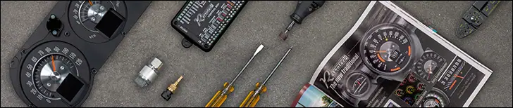
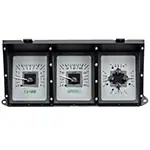
Keeping Cool & Keeping Track | Dakota Digital part #VHX-73F-PU
Classic Truck Performance
"The comparison between the well-worn original gauges and the new Dakota Digital VHX is like night and day."
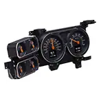
The Digital Age: Updating Your Gauges For An LS Swap | Dakota Digital part # RTX-79C-PU-X
Chevy Hardcore
"The RTX series is a modern cluster that pays tribute to some of the gauges of yesteryear. [...] But the RTX gauge set brings even more to the table with the addition of two thin-film-transistor (TFT) screens"
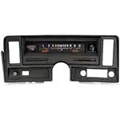
DIY Dash Upgrade That You Can Tackle At Home | Dakota Digital part # RTX-69C-NOV-X
Chevy Hardcore
"The RTX series is perfect for those wanting to retain a factory look, [...] while offering many late-model features enthusiasts can use to monitor their hot rod. In fact, at a casual glance, the average passerby might not even notice these are not original equipment."
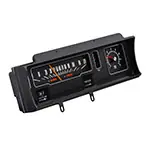
Swap Meet: How to drop a modern LS in place of an SBC | Dakota Digital part # RTX-70C-MAL-X
Hemmings Muscle Machines
"The factory 'sweep' dash package leaves a lot to be desired [...]. We wanted more than a speedometer and idiot lights to keep us informed and we prefer an 'original' analog look; the Dakota Digital RTX-series was just what we wanted."
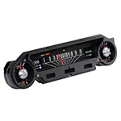
Upgrading To A Digital Instrument Panel!!! | Dakota Digital part # RTX-64F-FAL-X
Ellie's Garage on YouTube
"I am so excited that we're finally upgrading my 1965 Ford Falcon with a new digital instrument panel from Dakota Digital!! [...] I can completely customize the layout, the colors, and it gives me SO MUCH information--a digital speedometer, oil pressure, battery charge, coolant temperature--it's AMAZING!"
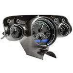
Easy DIY Gauge Upgrade for Your Tri-Five Chevy | Dakota Digital part # VHX-57C-K-B
Hot Rod Magazine
"For your high-performance engine, you want, at a minimum, to keep track of the six basics: speed, rpm, fuel, oil pressure, water temp, and volts. Thankfully, companies like Dakota Digital make it easy to upgrade the gauges in your hot rod while keeping the classic look."
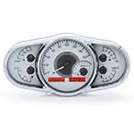
All The Right Connections | Dakota Digital part # VHX-1016
Modern Rodding Tech
"As an example of modern accessories, we will give a quick tutorial to go about hooking up a modern electronic instrument package such as the Dakota Digital VHX-1016-S-R. Today gauge and wiring manufacturers are making their products interface with each other by utilizing plugs that allow wiring systems to easily hook up with various gauges packages."
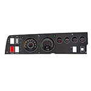
Dodge Interior Restoration: Mopar Connection's 1969 Super Bee Rallye Dash | Dakota Digital part # RTX-68D-CHG-X
Classic Industries News
"Fully installed, the new RTX cluster, dash pad, and bezels were stunning. We were amazed how much better the interior looked as a whole with the new cluster and dash pad. We could not wait to start driving and showing off our new dash."
Going Dakota Digital with our Project Belvedere | Dakota Digital part # VHX-1060
Champion Cooling
"Going beyond the basics, the options and features of the VHX opens up many possibilities. You can display a variety of information on the LCD display as we mentioned above, but you can also set up warnings from some of your gauges, too. Inside each display you can program your temperature, fuel, oil, and voltage gauges to alert you when conditions are too high or too low."
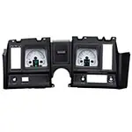
How to Install Gauges in a 1969 Camaro | Dakota Digital part # HDX-59C-CAM
Hot Rod
"What we recently discovered with this POL Week to Wicked Camaro installation is that Dakota Digital's comprehensive HDX line of gauges look lightyears better than stock and are super simple to install."
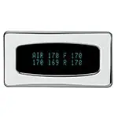
Installing Dakota Digital’s Odyssey Air Pressure Monitor | Dakota Digital part # ODY-19-6
Lateral-G
"If you’ve ever worked with Dakota Digital products you’ll know they are full of options and trick things you can do. [..] We opted to install a small Odyssey series display in the console so we can have constant tabs on the air pressure in not only each bag but the air tank as well."
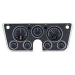
The New Age of Nostalgia: Dakota Digital's HDX Instrument System for 1967-72 for Chevy C10 | Dakota Digital part # HDX-67C-PU
In The Garage Media
"Literally, Dakota’s HDX system is a true plug-and-play; it bolts right up to your existing OE gauge bezel as well as any aftermarket reproduction—including their own, available separately (which we chose to use). Initial programming/setup is just as straightforward [...]! We’ll show you how easy that initial installation really is..."
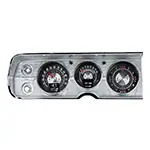
Retrotech RTX Series of Instrumentation for 1964-65 Chevelle | Dakota Digital part # RTX-64C-CVL-X
Fuel Curve
"The RTX series is the latest from Dakota Digital, focused on retaining that stock look without sacrificing the late-model features you love. [...] A casual glance may dismiss these as original equipment, but once you hit the switch and the LED backlighting comes on in your favorite color scheme, all doubts will be removed."
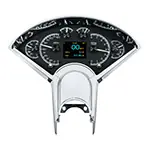
Our Project Gift Horse '56 Chevy Goes Dakota Digital | Dakota Digital part # HDX-55C
Chevy Hardcore
"One of the first digital gauge systems created by Dakota Digital was for the Tri-Five Chevys. Since then, it has continually evolved the system to include much of today’s technologies with an ever-expandable, daisy-chain-capable system of modules to include more options than you ever thought possible."
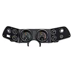
Dakota Digital Makes The New Look Old With Its Retrotech Series | Dakota Digital part # RTX-70C-CAM-X
Chevy Hardcore
"In the hot rodding hobby, not everyone wants their car to look custom, or different, from the way it came from the factory. [...] Luckily, Dakota Digital has stepped in and offers the Retrotech series (RTX). It’s a modern touch to a classic appearance."
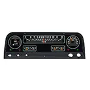
Project Raven - Installing New Gauges and Adding A/C | Dakota Digital part # RTX-64C-PU-X
Street Trucks
"We are [...] going to add a new Dakota Digital gauge cluster, which will take the guesswork out of fuel levels and engine temps. [...] These systems are specifically engineered for this year’s truck and designed to fit and feel like it came from the factory."
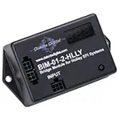
Combined Engine and EFI Monitoring Made Easy By Dakota Digital | Dakota Digital part # BIM-01-2-HLLY, BIM-01-2-MEGA, BIM-01-2-MSD
Chevy Hardcore
"Upgraded dash clusters and electronic fuel injection have taken the automotive hobby by storm, and there is a compatibility issue that has been resolved by the folks at Dakota Digital."
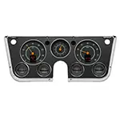
Installing Dakota Digital RTX Gauges In '67-'72 Chevy/GMC Trucks | Dakota Digital part # RTX-67C-PU
Street Trucks Magazine
"The RTX system combines modern digital electronics with a traditional look to give the driver up-to-date and accurate information on the operation of your vehicle."
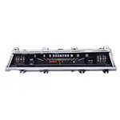
How to Install Stock Looking Modern Gauges | Dakota Digital part # RTX-66C-CVL
Hot Rod Magazine
"If you want modern gauges that keep the vintage look of your classic Chevy, then Dakota Digital has just what you're looking for."
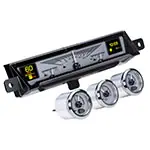
Updating a 1962 Chevrolet Impala With an HDX | Dakota Digital part # HDX-61C-IMP
Hot Rod Magazine
"The classic Chevy Impala is the epitome of some of America’s greatest years, with its slippery lines and tasteful execution. Why limit its great potential with a dated factory instrument panel that doesn’t yield the information you need [...]? Dakota Digital suggests there’s little reason to cut up your Chevy’s dashboard when their HDX direct-fit instrumentation system is available."
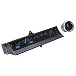
VHX-63C-CAD - This Caddy Got Gauged Up | Dakota Digital part # VHX-63C-CAD
Lowrider
"Fully lit needles, backlit faces, and highly visible LCD message centers [...], micro-controlled precision stepper motors, solid state sensors for unparalleled accuracy, and user-customizable display feedback, all supported by an unrivaled limited lifetime warranty which has become the standard for Dakota Digital instrumentation systems."
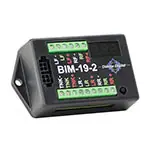
Additional Vehicle Monitoring Without Adding Gauges | Dakota Digital part # BIM Series
Chevy Hardcore
"The Dakota Digital gauge systems all offer six standard gauge readings (and depending on the vehicle, possibly more). While these are often enough for the average driver, for the enthusiast who desires more vital information about their vehicle, Dakota Digital can help you monitor more vehicle vitals with its expansion modules."
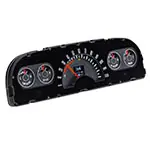
Quantifying The Value Of Aesthetics With A Dakota Digital Upgrade | Dakota Digital part # RTX-60C-PU-X
Chevy Hardcore
"For safety and simplicity, this upgrade ranks as one of the best conversions we have done on our project truck. Here is why we selected the Dakota Digital RTX gauge kit [...] for our project truck."
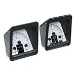
How to Install Dakota Digital HDX Instruments in a 1969 Camaro | Dakota Digital part # HDX-69C-CAM
Hot Rod Magazine
"Dakota Digital has long been known for its high-tech instrumentation for classic muscle cars, so it comes as no surprise it has introduced a wide variety of exciting instrument panels and gauges for classic Chevys. [...] The Dakota Digital HDX system fits right into the stock Camaro instrument cluster and console with a minimum of labor and expense."
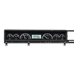
Ford Fairlane Restomod Gets A Dakota Digital VHX Upgrade | Dakota Digital part # VHX-66F-FAR
Street Muscle Magazine
"The VHX is a direct-fit, six-gauge system that bolts into the stock bezel, includes all the needed sensors, and even has different plates for the radio area. Buyers can choose from either a black or silver alloy background, and red, white, or blue LED backlighting."
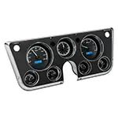
Project Rebirth '71 Suburban, Part 4: Gauge Gratification | Dakota Digital part # VHX-67C-PA
Chevy Hardcore Magazine
"So, you're cruising your truck down the highway and look to check your current mph but the speedometer is broken. [...] It was time to replace it all with a one-piece solution from Dakota Digital."

SEMA 2018: Dakota Digital Creates Retro-Looking Modern Gauges | Dakota Digital part # RTX Series
Chevy Hardcore Magazine
"Dakota Digital has long been known to deliver high-quality products that upgrade classic cars and not look stock, but now it has developed the Retrotech gauges that keep it simple but upgraded."
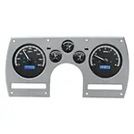
VHX Instrument Cluster Removes Barrier for LT1 Swaps | Dakota Digital part # VHX-82C-CAM
Hot Rod Network
"We wanted to bring the Mullet Camaro into the 21st century, so we went with their direct-fit VHX series of gauges, which have traditional needles and look amazing in the dash. Combined with the BIM module, the entire system installed in just a couple of hours with minimal wiring."
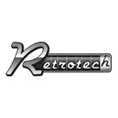
Dakota Digital's RTX Gauges Take Us Back To The Future | Dakota Digital part # RTX Series
Chevy Hardcore Magazine
"For those of you who want new school technology, but don’t want to lose that old school look, Dakota Digital has just the thing for you! Their new Retrotech series is all about keeping things looking factory, while giving the user modern capabilities."
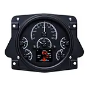
Dakota Digital HDX Installation | Dakota Digital part # RTX-66F-BRO-X
Street Trucks Magazine
"Expanding on the popular VHX series, HDX takes personalization and usability to a whole new level. Available with black or silver alloy gauge-face styling, the new HDX system allows users to select their favorite illumination color for the gauge readings and needles, as well as the TFT message center displays."
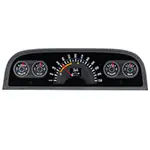
Dakota Digital's Retro Series Gauges For First Gen C/K Series Trucks | Dakota Digital part # RTX-60C-PU-X
Chevy Hardcore Magazine
"When a manufacturer comes out with a new product for our much overlooked series of truck, it gives us a cause to celebrate. In the case of Dakota Digital’s new RTX series gauges for the first generation C-series trucks, it is much more than just a new product release. It is exactly what we have been asking for."
HDX Gauges From Dakota Digital Solve Many Headaches | Dakota Digital part # HDX Series
Hot Rod Network
"If you’re in the market for some head-turning instrumentation with a ton of options and have a specific application in mind, Dakota Digital has got you covered with their new HDX line of gauges and clusters. The amount of customization available in this product will allow the user to tailor the instruments to any car."
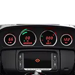
Installing Dakota Digital Gauges on a Custom Road Glide | Dakota Digital part # MCL-3014
Hot Bike Web
"But the addition of the Dakota Digital gauges proved to be a bit of a challenge. Again, these gauges are a snap to install, but that is on the OEM bar mount. By using an aftermarket setup like we did, we ran into all sorts of issues common with doing things that have been done before."
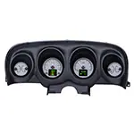
The RideTech StreetGRIP Mustang Gets Dakota Digital Gauges | Dakota Digital part # HDX-69F-MUS
RideTech
"RideTech has used Dakota Digital HDX gauges in many of our project vehicles; powered by a digital controller, the gauges could not be easier to install. There is no mess of wiring to deal with, and the gauge assemblies plug directly into the controller. Follow along as we show you the install process."
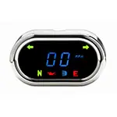
Dakota Digital MCL-5400 Series Speedometer Install | Dakota Digital part # MCL-5400
Hot Bike Web
"Dakota Digital has been making gauges for cars, trucks, off-road vehicles, and motorcycles for more than 25 years, and they’re all made in the USA. The MCL-5400 features were almost up to par with the stock speedo, which has your odometer and trip odometer, left and right turn signals, high beam, neutral, low oil pressure, and check-engine light."
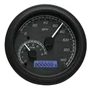
Dakota Digital MCX-2011 Gauge System | Dakota Digital part # MVX-2011
Hot Bike
"Dakota Digital would like to introduce the new MVX-2011 electronic instrumentation system for CAN bus to replace 2011-up Softail, 2012-up Dyna models and 2014-newer Road King with 4-1/2- or 5-inch tank mount gauges. The MVX-2011 plugs directly into the stock wiring with no modifications."
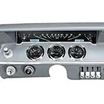
'61 Impala Dakota Digital Gauge & LED Taillight Install | Dakota Digital part # VHX-61C-IMP, LAT-NR161
Lowrider Network
"With the twist of a key, we watch the rpms gather, check our fuel levels, and make sure that everything’s up to par, but with a boring, dated, dusty cluster it can kill the vibe, which is why Dakota Digital has long been the answer to the simple problem.The new VHX Systems fit directly into the stock dash of a ’61-62 Chevy Impala without modification."
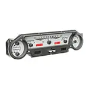
Now 1965 Mustang Owners with the "Falcon" Style Gauge Cluster can Enjoy the Accuracy of VHX Gauges | Dakota Digital part # VHX-64F-FAL
Mustang 360
"The VHX system was designed from the start to be a direct-replacement gauge panel that boasts all the essential gauges for monitoring your Mustang. This includes through-the-dial back lighting, settable warning systems, electronic speedometer with trip odometer, built-in tachometer, and a slew of warning indicators for those with EFI systems, cruise control, and other such add-ons."

We Install a Dakota Digital VHX System Into a 1986 Camaro | Dakota Digital part # VHX-82C-CAM
Super Chevy Magazine
"Dakota Digital decided to throw the third-gen crowd a rather tasty bone and design one of their sweet VHX dash systems for 1982-’89 Camaros. They incorporate micro-controlled precision stepper motors, solid-state sensors, modern aesthetics, and 21st century lighting into one package that really updates the look of these dashes."
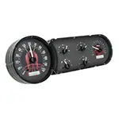
Project Sucker Punch: Installing Dakota Digital's VHX Gauge System | Dakota Digital part # VHX-53C
Rod Authority
"Our project car, Sucker Punch, a 1954 Chevrolet Bel Air needed a touch of modern technology. With help from Dakota Digital, we were able to get our hands on a custom Dakota Digital VHX instrument cluster. This is a completely custom part order and cannot be found on their website."
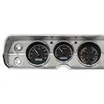
Dakota Digital VHX Gauge Install & Review | Dakota Digital part # VHX-65C-CVL
Lateral-G
"When they were delivered, we ripped open the box like a kid on Christmas morning, eager to hold the gauges in our hands. We were extremely impressed right off the bat – the gauges come in a really nice box that holds the gauges and all the required sending units and computer. The box was almost too pretty to open, but we popped the top and grabbed the gauges."
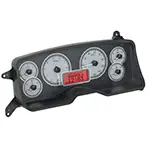
Install and Review Dakota Digital VHX Instruments for Fox-Body | Dakota Digital part # VHX-87F-MUS
Moser Engineering
"The VHX is a major upgrade for the Fox-body, bringing the car’s gauge technology into the 21st century. Dakota Digital includes detailed instructions along with new senders for vehicle speed, oil pressure, and coolant temperature."
Not sure what fits?
Talk to a tech in Sioux Falls, Monday to Friday, 8am to 5pm Central.